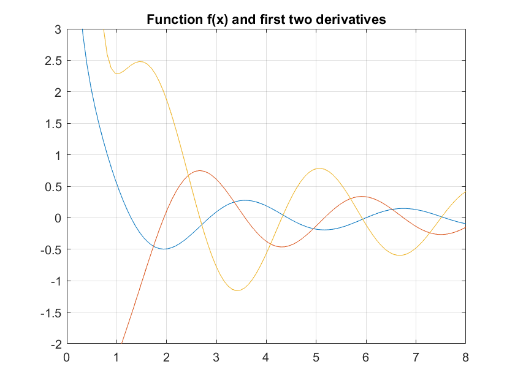
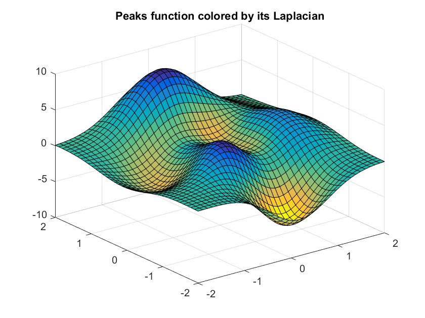

Getting Started
After initializing a variable of class audi by the command ainit, subsequent computations yield not only function values, but also derivatives. Curly braces are used for evaluation.
Consider the function
f = @(x) cos(2*x-1)/x;
Then
x = ainit(0.5);
y = f(x);
[y{0} y{1}]
ans =
2 -4
shows that f(0.5) = 2 and f'(0.5) = -4. Derivatives of higher order are available after according initialization:
x = ainit(0.5,3);
y = f(x);
[y{0} y{1} y{2} y{3}]
ans =
2 -4 8 -48
The cubic Taylor polynomial of f centered at the point x=0.5 is
ataylor(y)
ans =
-8 4 -4 2
Tou can also initialize audi variables with array data and deal with multivariate functions:
x = ainit(linspace(0,8),2);
y = f(x);
figure(1), plot(x{0},[y{0};y{1};y{2}])
axis([0 8 -2 3]), grid on
title('Function f(x) and first two derivatives')
[u,v] = ndgrid(linspace(-2,2,40));
[u,v] = ainit(u,v,2);
p = peaks(u,v);
figure(2), surf(u{0,0},v{0,0},p{0,0},p{2,0}+p{0,2})
title('Peaks function colored by its Laplacian')
  Detailed information can be found in the Documentation.